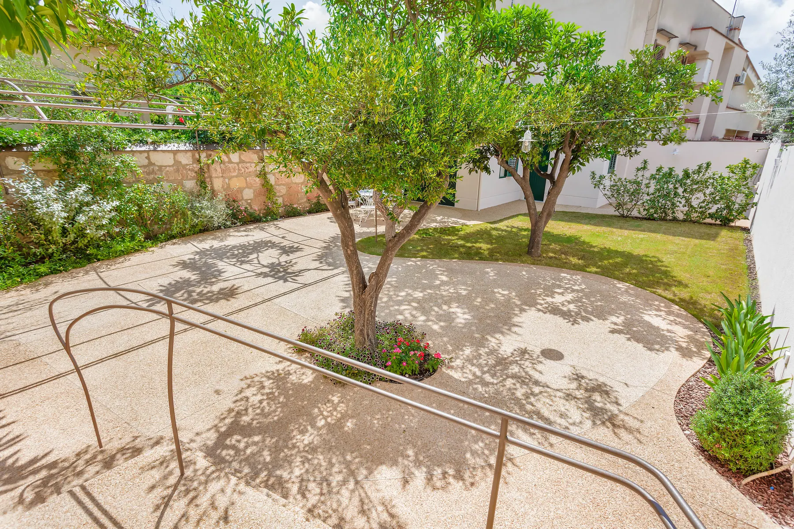

Quando si progetta una villa al mare in provincia di Trapani, la scelta dello stile non è solo estetica, è climatica. Dammuso lavico o cubo bianco?
Spesso i clienti ci chiedono una "casa in stile isolano". Ma quale isola? Pantelleria e le Egadi (Favignana) hanno linguaggi architettonici opposti.
Lo Stile Pantesco (Pantelleria)
Il Dammuso è figlio della pietra lavica scura. È un'architettura introversa, pensata per proteggersi dal vento forte. Muri spessi fino a un metro, tetti a cupola bianca per raccogliere l'acqua e giardini arabi chiusi da mura alte per proteggere gli agrumi. È perfetto se cerchi privacy assoluta e frescura naturale.
Lo Stile delle Egadi (Favignana/Levanzo)
Qui domina il Tufo Calcarenitico. L'architettura è più squadrata, i volumi sono "cubi bianchi" o color tufo naturale. È un'architettura più aperta verso il mare rispetto a Pantelleria, con grandi terrazze coperte da pergolati per vivere fuori.

Un giardino protetto, tipico dell'architettura isolana per ripararsi dal vento di Maestrale.
Il Design Contemporaneo
In Studio 4e non copiamo il passato, lo reinterpretiamo. Usiamo la pietra a secco locale (che cambia da zona a zona) per rivestire volumi moderni con grandi vetrate, unendo il fascino della tradizione al comfort visivo contemporaneo.
Anche le Isole Eolie (Lipari, Stromboli) hanno un linguaggio architettonico unico. Per progetti in quell'arcipelago, consulta Architetti Taormina, il nostro portale dedicato alla costa ionica e alle isole del Tirreno.
Vuoi una villa che rispetti il luogo?
Progettiamo architetture che sembrano nate dal paesaggio.
Vedi Portfolio Ville